<meta charset="utf-8"><meta name="viewport" content="width=device-width,initial-scale=1"><title>F!RST · Лаборатория · E0 Направление</title><style>
:root{--bg:#15120e;--panel:#1e1913;--ink:#eadfcd;--muted:#a3957f;--gold:#d3a54a;--rule:#332a1f;--mono:ui-monospace,Menlo,monospace}
*{box-sizing:border-box}html{color-scheme:dark}
body{margin:0;background:var(--bg);color:var(--ink);font:16px/1.55 -apple-system,"Helvetica Neue",Arial,sans-serif}
main{max-width:1240px;margin:0 auto;padding:32px 20px 80px}
h1,h2,h3{font-family:Georgia,"Iowan Old Style","Times New Roman",serif;font-weight:400;letter-spacing:.01em;text-wrap:balance;margin:0}
h1{font-size:2.2rem;line-height:1.15}h2{font-size:1.6rem}h3{font-size:1.15rem;color:var(--gold)}
.sub{color:var(--muted);margin:.5rem 0 0;max-width:62ch}
header{padding-bottom:24px;border-bottom:1px solid var(--rule)}
.intro p,.outro p{max-width:72ch}
.intro p,.outro p,.note p{margin:.6rem 0}
section.v{padding:36px 0;border-bottom:1px solid var(--rule)}
.vhead{display:flex;align-items:baseline;gap:14px;flex-wrap:wrap;margin-bottom:6px}
.id{font-family:var(--mono);color:var(--gold);font-size:.95rem;letter-spacing:.08em}
.thesis{color:var(--ink);font-size:1.05rem;margin:0 0 16px;max-width:72ch}
.shots{display:grid;gap:14px;grid-template-columns:repeat(auto-fit,minmax(min(100%,520px),1fr))}
figure{margin:0;background:var(--panel);border-radius:6px;overflow:hidden}
figure img{display:block;width:100%;height:auto}
figcaption{padding:6px 10px;font-family:var(--mono);font-size:.78rem;color:var(--muted)}
.meta{display:grid;grid-template-columns:auto 1fr;gap:6px 16px;margin-top:16px;font-size:.95rem}
.meta dt{color:var(--muted);text-transform:uppercase;letter-spacing:.08em;font-size:.72rem;padding-top:.25rem}
.meta dd{margin:0}
.note{background:var(--panel);border-left:3px solid var(--gold);padding:10px 16px;margin-top:14px;max-width:80ch}
table{border-collapse:collapse;width:100%;font-size:.95rem;margin-top:12px}
th,td{border:1px solid var(--rule);padding:8px 10px;text-align:left;vertical-align:top}
th{color:var(--muted);font-weight:500;font-size:.8rem;text-transform:uppercase;letter-spacing:.06em}
td:not(:first-child){font-family:var(--mono);color:var(--muted)}
.wrap{overflow-x:auto}
.compare{display:grid;gap:14px;grid-template-columns:repeat(auto-fit,minmax(min(100%,360px),1fr));margin-top:20px}
a{color:var(--gold)}
@media (prefers-reduced-motion:no-preference){figure img{transition:transform .25s ease}figure:hover img{transform:scale(1.01)}}
@page{size:A4 landscape;margin:12mm;background:#15120e}
@media print{
  html,body{background:var(--bg) !important;-webkit-print-color-adjust:exact;print-color-adjust:exact}
  body{font-size:15px}
  main{max-width:none;padding:0}
  header{border:0;padding-bottom:12px}
  section.v{break-before:page;border-bottom:0;padding:0;display:grid;grid-template-columns:1fr 1fr;gap:6px 28px;
    grid-template-areas:"head head" "thesis thesis" "shots shots" "refs note";align-content:start}
  .vhead{grid-area:head}.thesis{grid-area:thesis;margin-bottom:6px}.shots{grid-area:shots;grid-template-columns:1fr 1fr}
  .meta{grid-area:refs;margin-top:10px;align-self:start}.note{grid-area:note;max-width:none;margin-top:10px}
  .compare{grid-template-columns:1fr 1fr 1fr}
  section.outro{break-before:page}
  figure,.note,table,.compare figure{break-inside:avoid}
  figure img{transition:none}
  a{text-decoration:none}
}
</style><main>
<header><h1>F!RST · Лаборатория · E0 Направление</h1>
<p class='sub'>Раунд 4, финал E0. Мир — «гик-берлога», игроки — миниатюры на жетонах, камера сверху. Здесь якорь стиля A1 и первый статичный тизер того, как эффекты выглядят предметами на столе.</p></header>
<section class='intro'><p><strong>Точка А — как игра выглядит сейчас.</strong> Тёмный стол, серые панели, буква спрятана в медальон в углу карты, ничего не движется, пока игрок думает. Полный аудит — в `audit/README.md`.</p>
<div class='compare'><figure><figcaption>Меню сейчас</figcaption></figure><figure><figcaption>Стол сейчас</figcaption></figure><figure><figcaption>Рука крупно: буква занимает &lt;1 % карты</figcaption></figure></div>
<p><strong>Вердикт судьи по раунду 1 (18.08).</strong> D1 Таверна — 2·1·2·2, нравится стиль, пугает похожесть на существующее. D2 Типограф — 2·1·2·1, читаемость хорошая, но слишком реалистично. D3 Мультяшный — 2·2·1·1, читаемо и лаконично, но дёшево и как копия мобильных игр. D4 Таро — 0·1·0·0, темно, линии не читаются. Ни один мир не принят целиком; принята <strong>подача D1</strong> — живопись, тёплый свет, толстые формы.</p>
<p><strong>Новый лор от автора.</strong> Игра родилась в перерывах между длинными партиями в MTG — как быстрая простая игра «между делом». Поэтому мир — не выдуманная вселенная, а <strong>реальный стол настольщика</strong>: карты ККИ, кубики, фигурки, коробки колод, коврик — гиковская атмосфера в фэнтези-сеттинге. Отсылки, не копии брендов.</p>
<p><strong>Вердикт по раунду 2 (18.08).</strong> D5a Кухня — 2·2·2·2, нравится антураж и стиль карт; D5b Клуб — 1·2·2·2, окружение отличное, «хочется анимировать»; D5c Таверна+гик — 1·2·1·0, портреты в стол вписаны как часть дизайна, но таверна — уже Hearthstone. В D5a и D5b иконки персонажей — инородные. <strong>Принято:</strong> мир D5a + жизнь окружения D5b (дом, а не магазин: полки с настолками за спиной) + портреты как физические предметы на столе, как в D5c.</p>
<p><strong>Вердикт по раунду 3 (18.08).</strong> P1 Рамки — 1·1·2·2, рамки не нравятся. P2 Миниатюры — 1·2·2·2, «очень нравятся статуэтки», но не решить между ними и жетонами; делать крупнее. P3 Жетоны — 2·2·2·2, «жетоны классные». В P2 и P3 карты противника под углом читаются плохо. Вопрос судьи: как будут выглядеть применённые эффекты (F, сброс)?</p>
<p><strong>Решения арт-директора → раунд 4.</strong> Миниатюра <strong>на</strong> жетоне-подставке (гибрид P2+P3, крупнее). Камера — почти строго сверху, ряды равновелики, карты противника «лицом к игроку». «Популярные герои» — как архетипы, не копии. Эффекты — <strong>предметы на столе</strong>: F — замок-жетон на слоте, T — капкан-жетон под рукой, S — карту утаскивают в лоток, R — карта поднимается из лотка, I — добор со «шлепком». Сброс — деревянный лоток.</p>
<p><strong>Принципы, по которым судим</strong> (0–2 балла каждый): П1 буква — герой · П2 хочется, чтобы это двигалось · П4 уют, где остался бы вечером · П5 один мир для меню, стола, карт и кнопок. П3 (действие объясняет себя) в статике не проверяется — это E4.</p></section>
<section class='v' id='D1'><div class='vhead'><span class='id'>D1</span><h2>Светлое фэнтези-таверна</h2></div>
<p class='thesis'>Тот же мир Ордена Первых, но с светом и игривостью Hearthstone: мёд, свечи, толстые формы, дружелюбие.</p>
<div class='shots'>
<figure>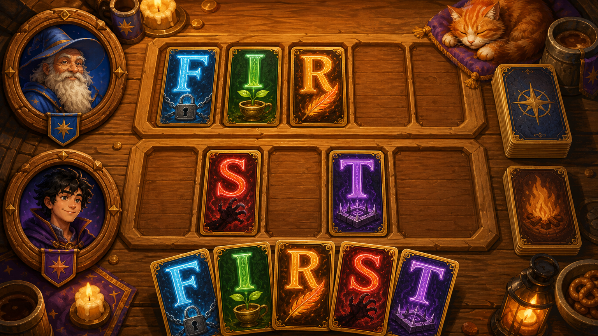<figcaption>openai/gpt-5.4-image-2 · #1 · 54.3 с · $0.035</figcaption></figure>
<figure>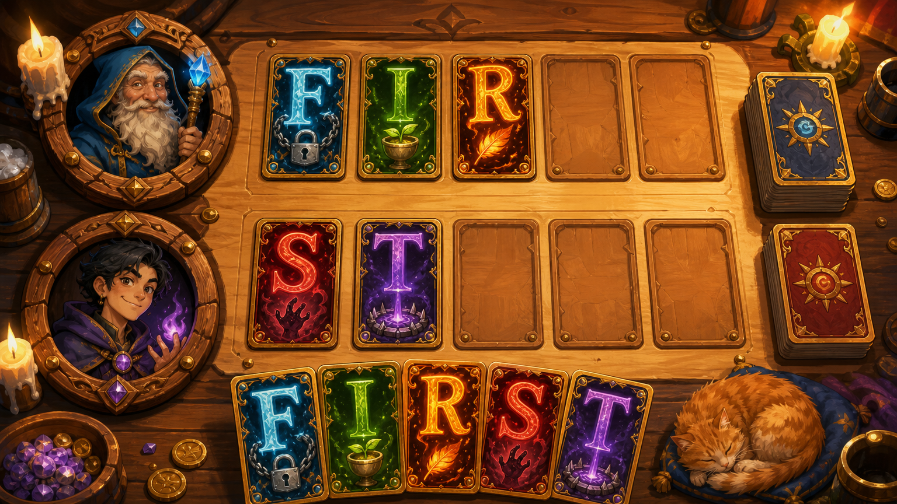<figcaption>openai/gpt-5.4-image-2 · #2 · 49.7 с · $0.035</figcaption></figure>
</div>
<dl class='meta'><dt>Референсы</dt><dd>Hearthstone (стол, освещение, «толстые» формы), Legends of Runeterra (спокойная живопись), Gwent (живописность)</dd></dl>
<div class='note'><h3>Арт-директор</h3><p>Тёплая, дружелюбная, ближе всего к текущему арту — лечит главную болезнь (свет) без смены вселенной. Буквы читаются, но остаются свечением поверх картинки, а не предметом; вокруг много бытового шума (кружки, кот, лампа) — уютно, но на телефоне это шум. Риск: «ещё один Hearthstone». Мои баллы: П1 1 · П2 2 · П4 2 · П5 2.</p></div>
</section>
<section class='v' id='D2'><div class='vhead'><span class='id'>D2</span><h2>Кабинет типографа</h2></div>
<p class='thesis'>Буквы — физические литеры на картоне, эмблемы школ — сургучные печати, стол — рабочее место мастера при лампе. Игра про то, кто первым наберёт слово.</p>
<div class='shots'>
<figure>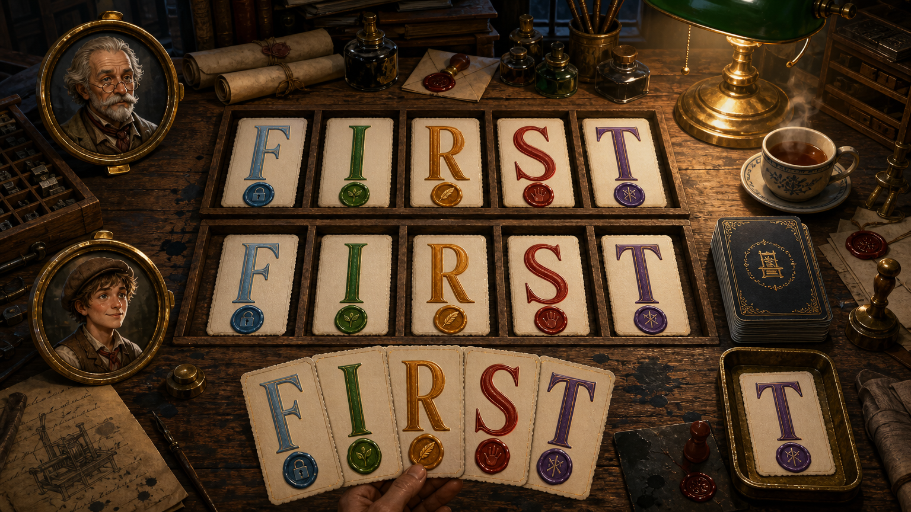<figcaption>openai/gpt-5.4-image-2 · #1 · 66.1 с · $0.035</figcaption></figure>
<figure>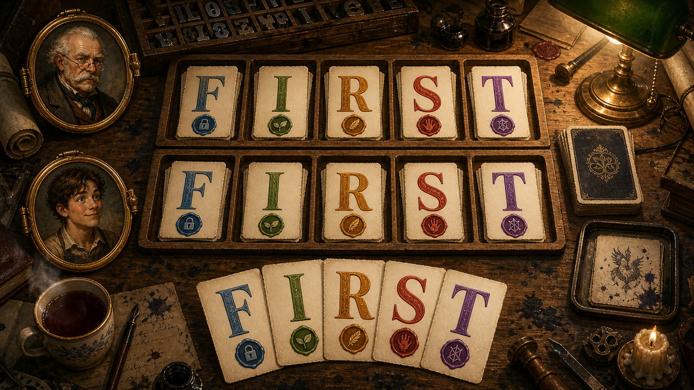<figcaption>openai/gpt-5.4-image-2 · #2 · 63.5 с · $0.035</figcaption></figure>
</div>
<dl class='meta'><dt>Референсы</dt><dd>Inscryption (интимность стола и лампы, без хоррора), Pentiment и Inkulinati (рукопись, буквица), Book of Hours (уют кабинета), letterpress-типографика</dd></dl>
<div class='note'><h3>Арт-директор</h3><p>Единственное направление, где буква — предмет, а не декор. Эмблема ушла в печать — готовая система иконок школ; каждый предмет на столе может стать UI: лоток — сброс, лампа — живой свет, реагирующий на события, чернильница — таймер. Лор рождается сам. Уют максимальный. Слабые места: рендер ушёл в фотореализм — вернуть в живопись; школы различаются только цветом буквы — эффектам придётся быть ярче стола. Мои баллы: П1 2 · П2 2 · П4 2 · П5 2.</p></div>
</section>
<section class='v' id='D3'><div class='vhead'><span class='id'>D3</span><h2>Яркий мультяшный настольный</h2></div>
<p class='thesis'>Толстый контур, cel-shading, гигантская буква — максимальная читаемость на телефоне, весело и легко.</p>
<div class='shots'>
<figure>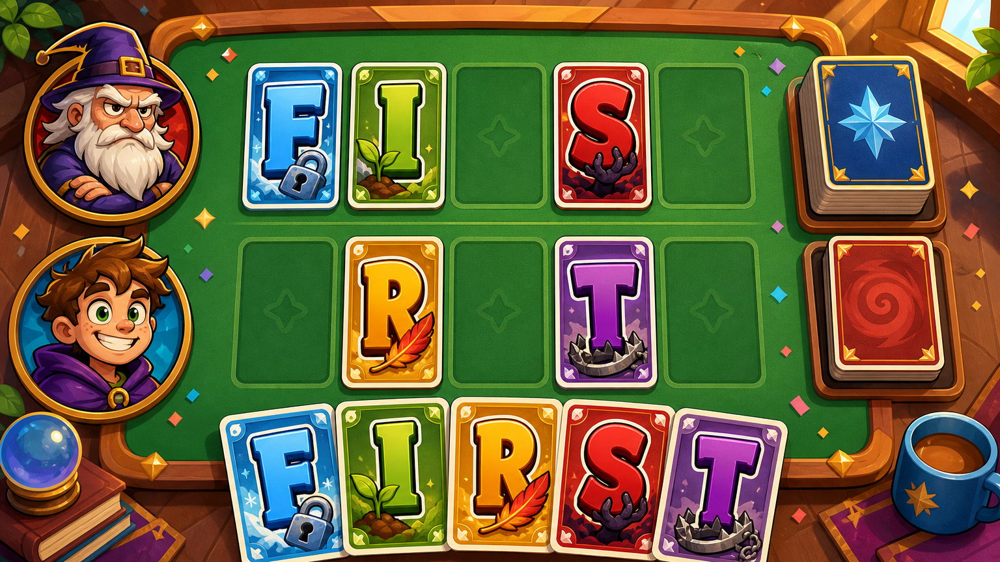<figcaption>openai/gpt-5.4-image-2 · #1 · 51.8 с · $0.035</figcaption></figure>
<figure>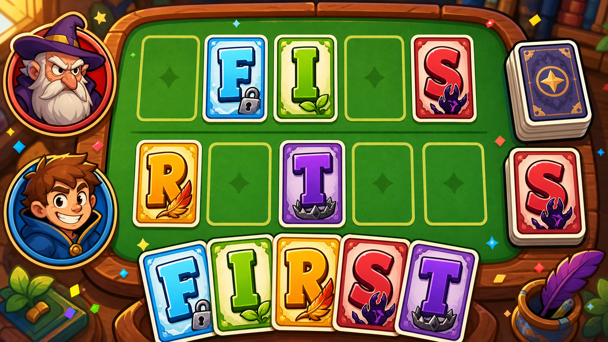<figcaption>openai/gpt-5.4-image-2 · #2 · 42.0 с · $0.035</figcaption></figure>
</div>
<dl class='meta'><dt>Референсы</dt><dd>Wildfrost, Marvel Snap, Cult of the Lamb, Slay the Spire 2, Kingdom Rush; по движению — Balatro</dd></dl>
<div class='note'><h3>Арт-директор</h3><p>Лучшая читаемость и самый «живой» даже в статике — толстые формы просятся в упругую анимацию. Но это полный отказ от текущего арта, легко скатиться в безликую мобильную игру, истории и лора здесь меньше всего. Мои баллы: П1 2 · П2 2 · П4 1 · П5 1.</p></div>
</section>
<section class='v' id='D4'><div class='vhead'><span class='id'>D4</span><h2>Лавка таро</h2></div>
<p class='thesis'>Тёмный уют: бархат, свечи, золотая фольга, буква как аркан.</p>
<div class='shots'>
<figure>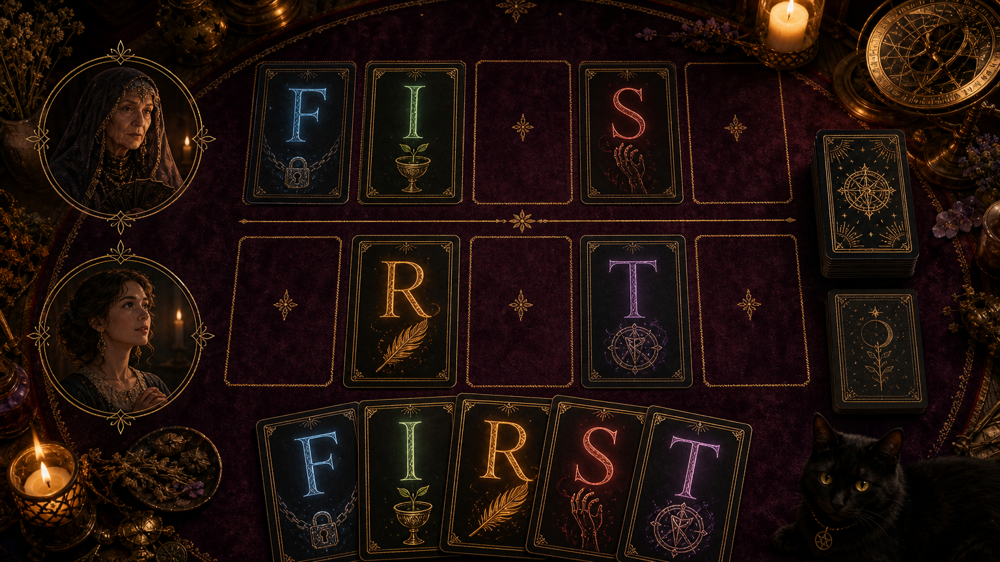<figcaption>openai/gpt-5.4-image-2 · #1 · 48.4 с · $0.035</figcaption></figure>
<figure>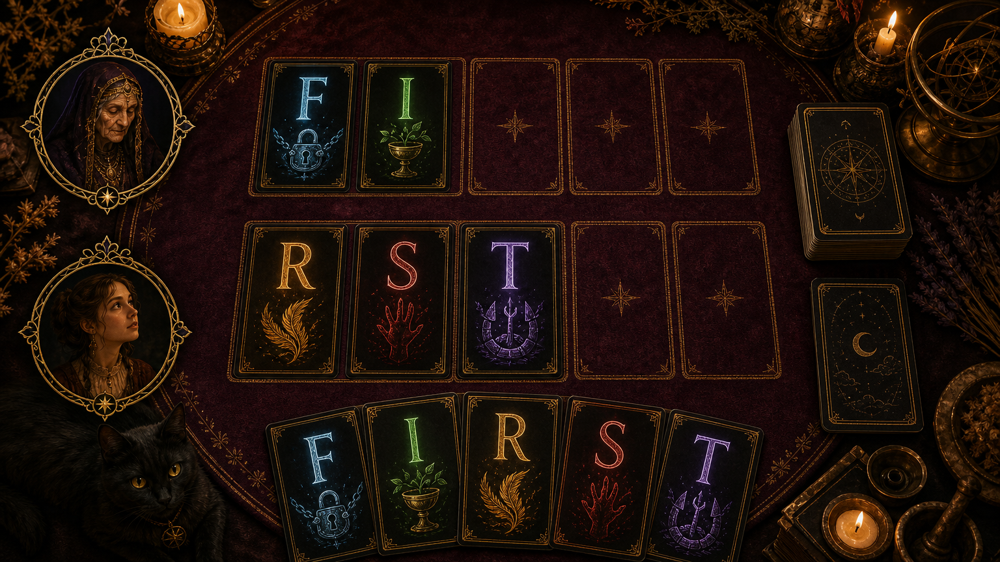<figcaption>openai/gpt-5.4-image-2 · #2 · 65.4 с · $0.035</figcaption></figure>
</div>
<dl class='meta'><dt>Референсы</dt><dd>Cultist Simulator, Book of Hours, Balatro (карты таро), эстетика тарологических колод</dd></dl>
<div class='note'><h3>Арт-директор</h3><p>Элегантно, буква читается, атмосфера есть — но это снова тёмный экран, где уют держится на трёх свечах; тонкая золотая линия пропадёт на телефоне; школы плохо различимы. Мои баллы: П1 2 · П2 1 · П4 1 · П5 2.</p></div>
</section>
<section class='v' id='D5a'><div class='vhead'><span class='id'>D5a</span><h2>Стол гика: кухня дома, вечер после большой партии</h2></div>
<p class='thesis'>Домашний стол после долгой партии в ККИ: фэнтези-коврик, миниатюра на страже, чипсы, чай, кубики — и наша быстрая игра посередине.</p>
<div class='shots'>
<figure>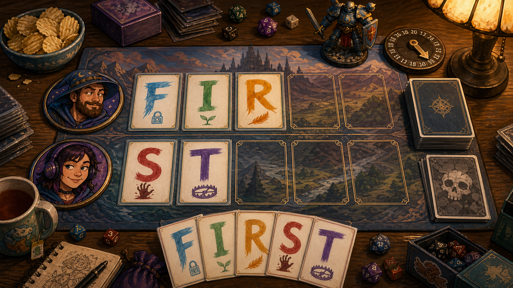<figcaption>openai/gpt-5.4-image-2 · #1 · 52.5 с · $0.036</figcaption></figure>
<figure>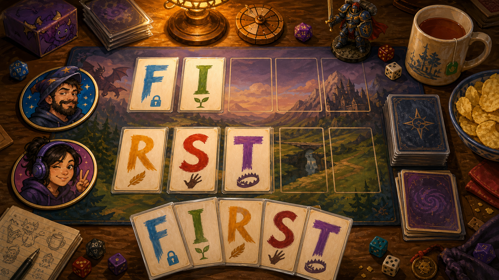<figcaption>openai/gpt-5.4-image-2 · #2 · 58.1 с · $0.036</figcaption></figure>
</div>
<dl class='meta'><dt>Референсы</dt><dd>Настоящий стол на «пятничной Магии»; подача — Hearthstone (свет, толстые формы); композиция — Inscryption (интимность стола сверху)</dd></dl>
<div class='note'><h3>Арт-директор</h3><p>Самый честный ответ на лор: это буквально «то, из чего игра родилась». Атрибутика читается с первого взгляда и рассказывает историю без слов. Слабое место — рисованный коврик под картами шумит и отнимает у карт контраст: в игре коврик придётся приглушить или сделать однотонным в зоне слотов. Персонажи-портреты в худи и наушниках — современные, это правильно для этого мира. Мои баллы: П1 2 · П2 2 (лампа, пар от чая, кубик, который можно крутить) · П4 2 · П5 2.</p></div>
</section>
<section class='v' id='D5b'><div class='vhead'><span class='id'>D5b</span><h2>Стол гика: игровой клуб / магазин настолок</h2></div>
<p class='thesis'>Стол в клубе: чёрный неопреновый коврик, полки с коробками за спиной, стойка с бустерами, лист пар турнира.</p>
<div class='shots'>
<figure>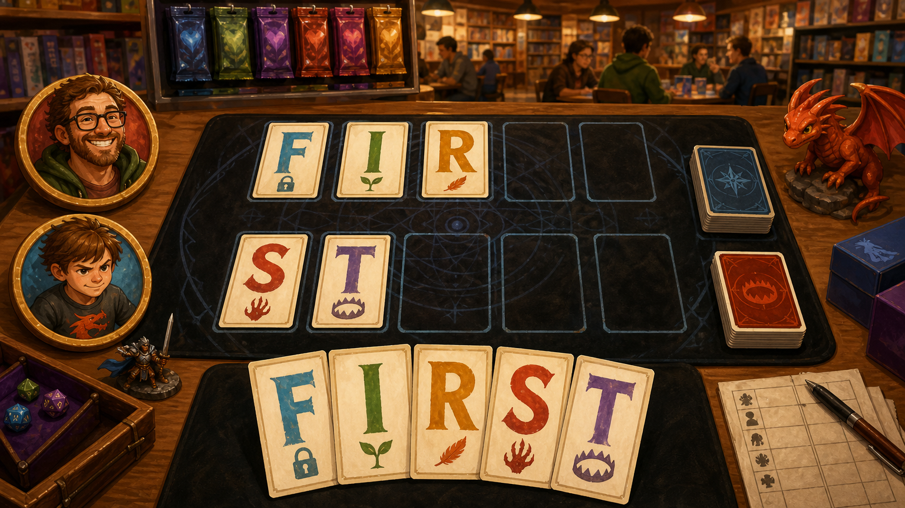<figcaption>openai/gpt-5.4-image-2 · #1 · 45.2 с · $0.035</figcaption></figure>
<figure>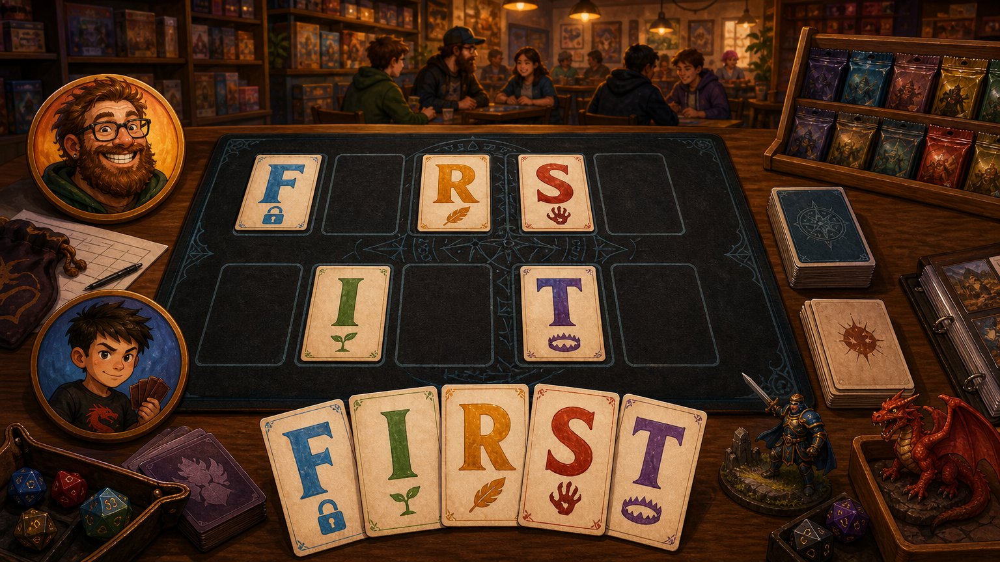<figcaption>openai/gpt-5.4-image-2 · #2 · 58.4 с · $0.035</figcaption></figure>
</div>
<dl class='meta'><dt>Референсы</dt><dd>Локальный игровой магазин; подача — как в D1</dd></dl>
<div class='note'><h3>Арт-директор</h3><p>Лучшая читаемость карт из всех девяти рендеров — кремовые карты на чёрном коврике. Фон клуба даёт «жизнь вокруг» (люди, лампы), это готовая идея для idle-движения фона. Но уюта чуть меньше, чем дома: публичное место, свет холоднее и рассеяннее. Мои баллы: П1 2 · П2 2 · П4 1 · П5 2.</p></div>
</section>
<section class='v' id='D5c'><div class='vhead'><span class='id'>D5c</span><h2>Стол гика в фэнтези-таверне (гибрид с D1)</h2></div>
<p class='thesis'>Таверна из D1, но стол принадлежит гикам: коврик, фигурка у свечи, кубики, спин-даун, тарелка чипсов рядом с кружкой.</p>
<div class='shots'>
<figure>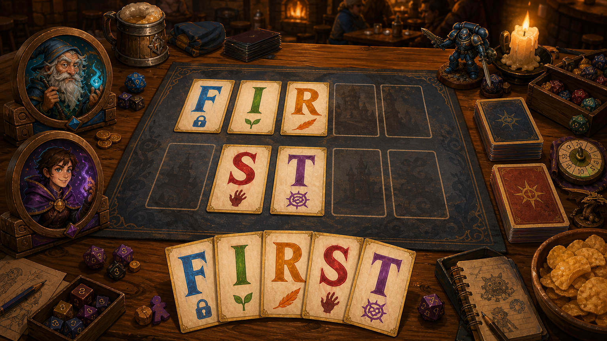<figcaption>openai/gpt-5.4-image-2 · #1 · 66.2 с · $0.036</figcaption></figure>
<figure>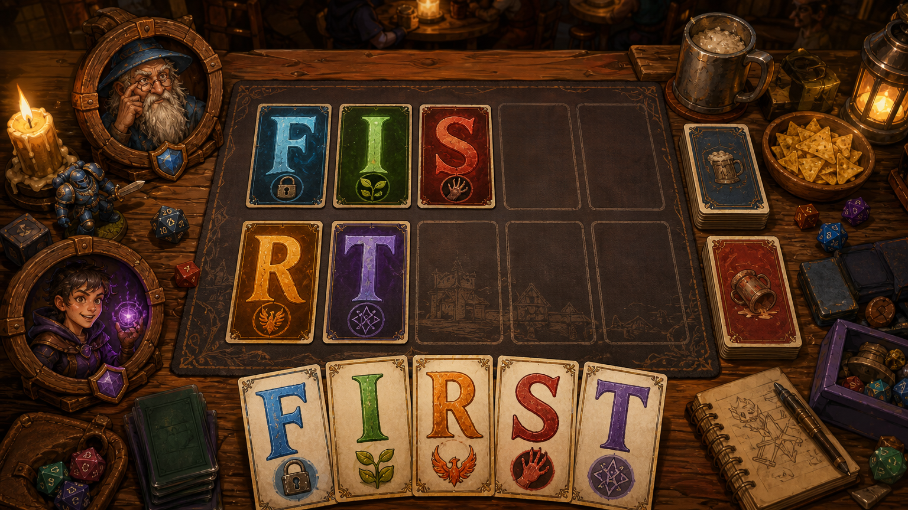<figcaption>openai/gpt-5.4-image-2 · #2 · 50.6 с · $0.036</figcaption></figure>
</div>
<dl class='meta'><dt>Референсы</dt><dd>D1 + гик-атрибутика</dd></dl>
<div class='note'><h3>Арт-директор</h3><p>Самый тёплый и «дорогой» на вид; вариант #2 показал интересный ход — цветная подложка карты по школе с кремовой буквой (читается хуже, чем кремовая карта, но узнаваемее в стопке). Риск тот же, что у D1: похоже на существующее — атрибутика спасает лишь отчасти. Мои баллы: П1 2 · П2 2 · П4 2 · П5 1.</p></div>
</section>
<section class='v' id='P1'><div class='vhead'><span class='id'>P1</span><h2>Портреты — деревянные рамки, стоящие на столе</h2></div>
<p class='thesis'>Две настольные фоторамки с портретами игроков на краю стола, с латунной табличкой.</p>
<div class='shots'>
<figure>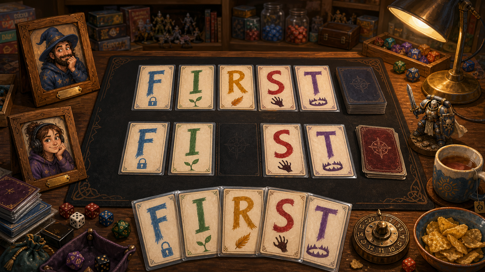<figcaption>openai/gpt-5.4-image-2 · #1 · 57.3 с · $0.036</figcaption></figure>
<figure>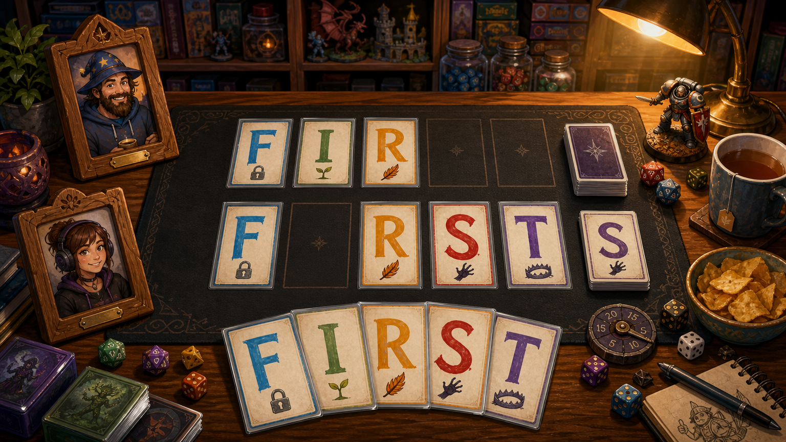<figcaption>openai/gpt-5.4-image-2 · #2 · 63.0 с · $0.036</figcaption></figure>
</div>
<dl class='meta'><dt>Референсы</dt><dd>D5c (портреты в рамках как часть стола)</dd></dl>
<div class='note'><h3>Арт-директор</h3><p>Спокойно, понятно, «домашне». Рамка — готовый UI-контейнер: в неё можно вписать имя, таймер, счётчик — и всё будет частью предмета. Из минусов: рамка статична по природе, живость придётся добавлять светом (лампа бликует на стекле, рамка чуть вздрагивает при ударе). Мои баллы: П1 2 · П2 1 · П4 2 · П5 2.</p></div>
</section>
<section class='v' id='P2'><div class='vhead'><span class='id'>P2</span><h2>Портреты — раскрашенные миниатюры игроков</h2></div>
<p class='thesis'>Игроки стоят на коврике как две расписанные миниатюры на круглых подставках — карикатурные «мы».</p>
<div class='shots'>
<figure>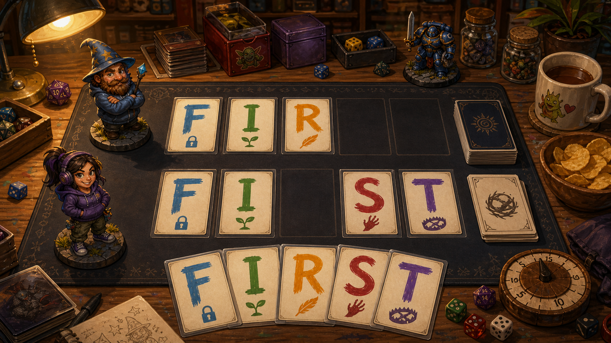<figcaption>openai/gpt-5.4-image-2 · #1 · 58.7 с · $0.036</figcaption></figure>
<figure>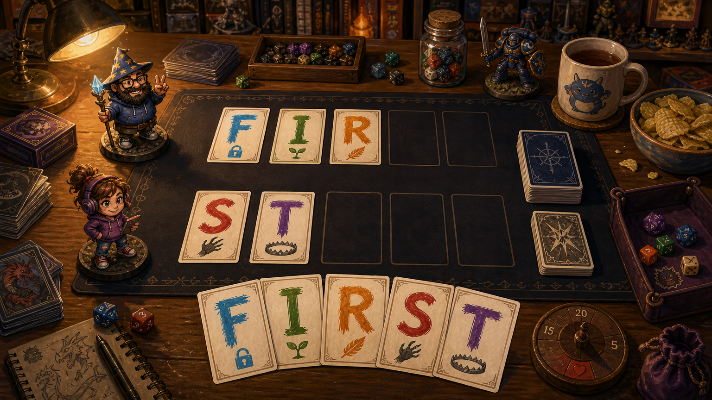<figcaption>openai/gpt-5.4-image-2 · #2 · 54.6 с · $0.036</figcaption></figure>
</div>
<dl class='meta'><dt>Референсы</dt><dd>Настольные миниатюры; Warhammer-хобби как дух, без брендов</dd></dl>
<div class='note'><h3>Арт-директор</h3><p>Самый гиковский и самый живой вариант: миниатюра — уже персонаж, ей естественно покачиваться, поворачиваться к активной зоне, вздрагивать от удара карты, подсвечиваться на своём ходу. Портрет перестаёт быть «иконкой» и становится жителем стола. Риск: на телефоне мелкая фигурка читается хуже круглого портрета — придётся дать ей крупный масштаб или подставку-ореол. Мои баллы: П1 2 · П2 2 · П4 2 · П5 2.</p></div>
</section>
<section class='v' id='P3'><div class='vhead'><span class='id'>P3</span><h2>Портреты — жетоны в карманах коврика</h2></div>
<p class='thesis'>Толстые круглые картонные жетоны с портретами лежат в напечатанных на коврике круглых слотах.</p>
<div class='shots'>
<figure>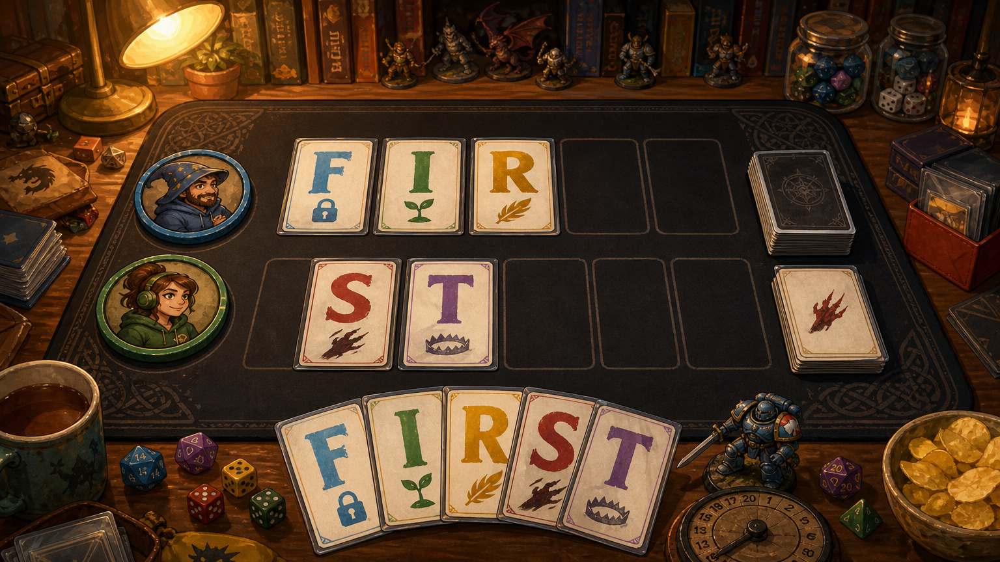<figcaption>openai/gpt-5.4-image-2 · #1 · 51.8 с · $0.036</figcaption></figure>
<figure>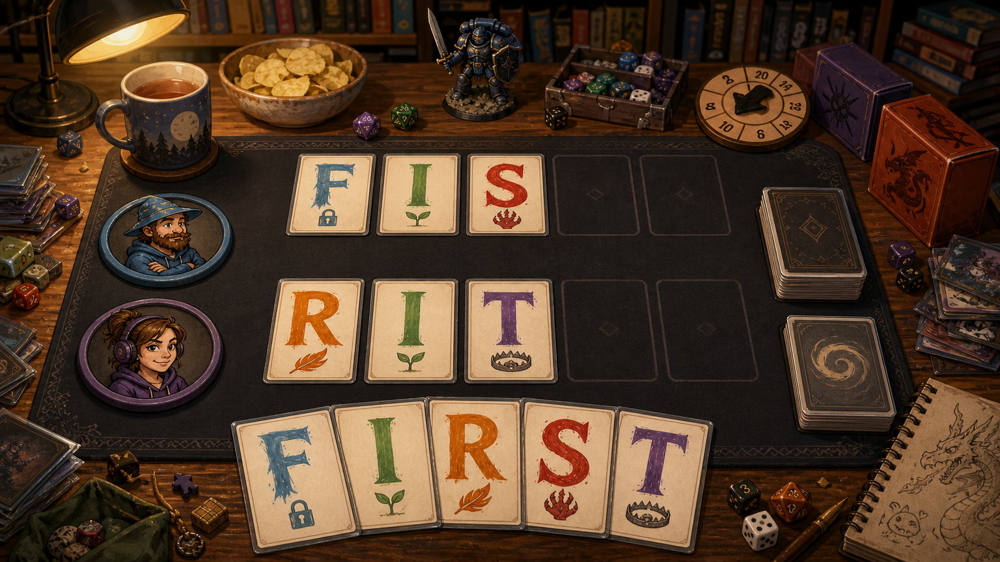<figcaption>openai/gpt-5.4-image-2 · #2 · 49.9 с · $0.036</figcaption></figure>
</div>
<dl class='meta'><dt>Референсы</dt><dd>Жетоны игроков из настолок</dd></dl>
<div class='note'><h3>Арт-директор</h3><p>Самый честный «настольный» ответ и самый читаемый на телефоне (круг с толстым цветным ободком). Но лежащий плашмя жетон визуально ближе всего к тем самым «иконкам», которые судья назвал инородными; спасает только ободок и печать слота. Живость — только вращение/подпрыгивание. Мои баллы: П1 2 · П2 1 · П4 2 · П5 1.</p></div>
</section>
<section class='v' id='A1'><div class='vhead'><span class='id'>A1</span><h2>Якорь стиля: финальный стол «гик-берлога»</h2></div>
<p class='thesis'>Все решения E0 в одном кадре: камера сверху, спокойный коврик с рунным кантом, кремовые карты-литеры в протекторах, миниатюры на жетонах, лоток сброса, полки настолок за спиной, лампа.</p>
<div class='shots'>
<figure>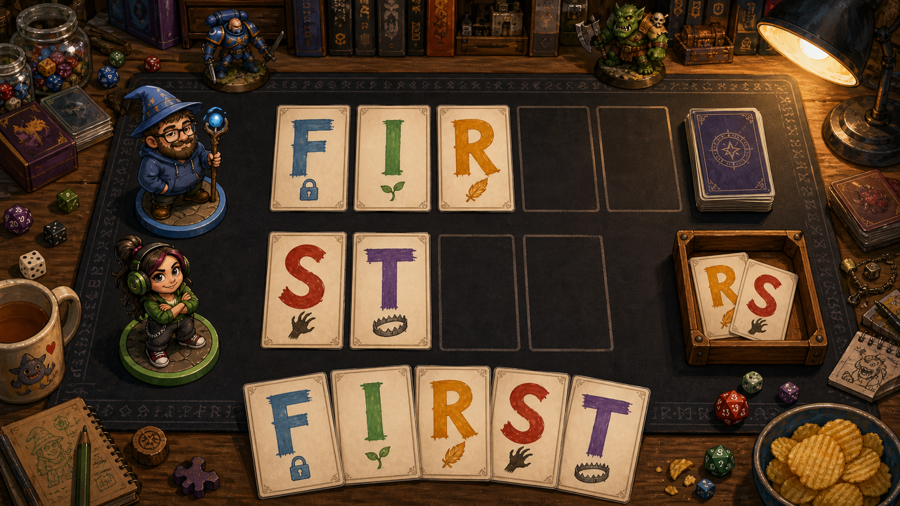<figcaption>openai/gpt-5.4-image-2 · #1 · 48.9 с · $0.037</figcaption></figure>
<figure>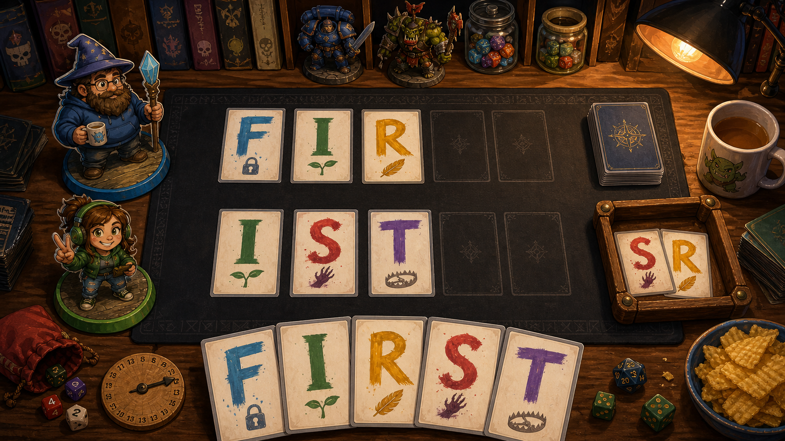<figcaption>openai/gpt-5.4-image-2 · #2 · 48.9 с · $0.037</figcaption></figure>
</div>
<dl class='meta'><dt>Референсы</dt><dd>D5a (мир) + D5b (полки, жизнь окружения) + P2/P3 (игроки) + собственные решения по камере</dd></dl>
<div class='note'><h3>Арт-директор</h3><p>Это и есть точка Б, к которой едем. Проверка на принципах: П1 — буквы читаются первыми в обоих рядах, наклон ушёл; П4 — лампа, кружка, чипсы, полки — уют без таверны; П5 — карты, жетоны, лоток, кубики сделаны из одного материала. Что ещё уточнять в следующих экспериментах: коврик — печатный ли кант или совсем гладкий (E3); размер миниатюр на 960×540 (E2); лоток сброса — справа снизу или справа под колодой (E6). Мои баллы: П1 2 · П2 2 · П4 2 · П5 2.</p></div>
</section>
<section class='v' id='FX'><div class='vhead'><span class='id'>FX</span><h2>Тизер эффектов: запрет F и сброс</h2></div>
<p class='thesis'>Крупный план двух моментов: на слот противника защёлкнут замок-жетон с инеем и вымпелом запрещённой буквы; карта S съезжает в деревянный лоток сброса с пылью.</p>
<div class='shots'>
<figure>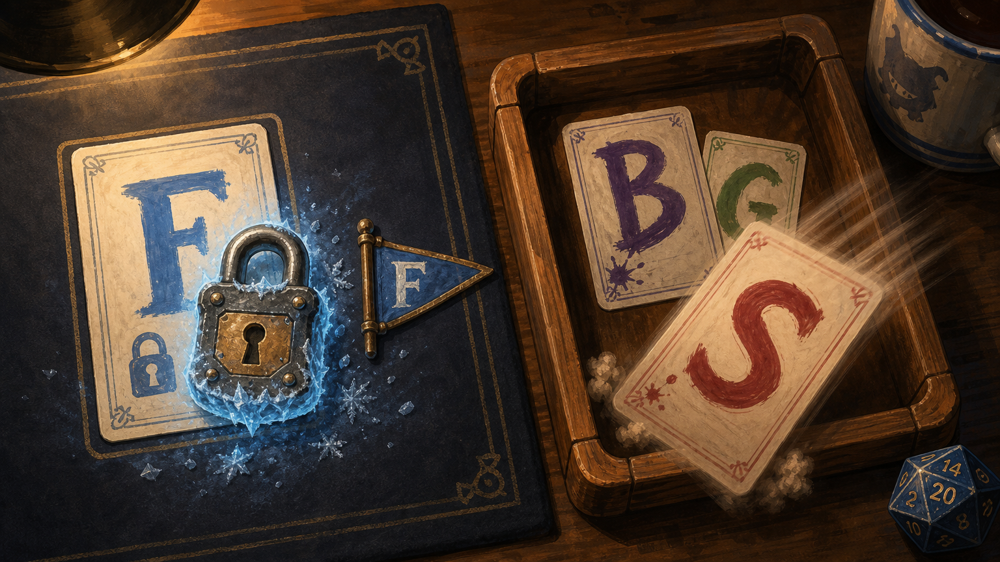<figcaption>openai/gpt-5.4-image-2 · #1 · 45.7 с · $0.035</figcaption></figure>
<figure>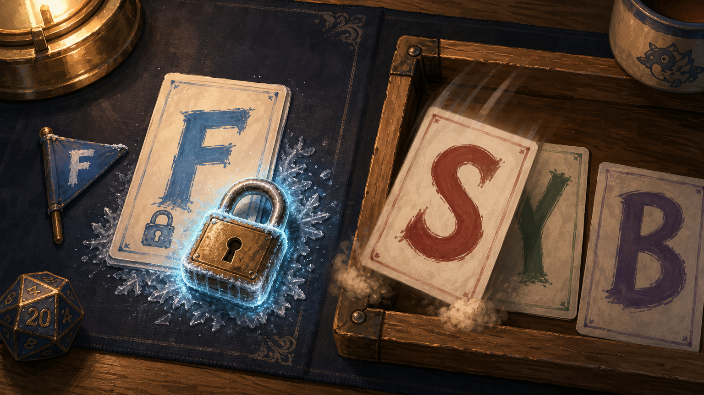<figcaption>openai/gpt-5.4-image-2 · #2 · 39.3 с · $0.035</figcaption></figure>
</div>
<dl class='meta'><dt>Референсы</dt><dd>Настольные жетоны состояний; Hearthstone (эффект рождается из предмета, а не поверх)</dd></dl>
<div class='note'><h3>Арт-директор</h3><p>Так выглядит правило «эффект — предмет»: замок можно физически поставить, вымпел — воткнуть, карту — смахнуть в лоток. Всё это анимируется руками-невидимками: предмет прилетает сверху, приземляется с микроударом, оставляет след (иней, пыль). Оговорка: это статика, движение и читаемость «что произошло» проверяем в E4 на незнакомце. Лишние буквы B/G в лотке — артефакт генерации. Мои баллы: П1 2 · П2 2 · П4 2 · П5 2.</p></div>
</section>
<section class='outro'><p><strong>Итог E0 (на утверждение).</strong> Якорь стиля — <strong>A1</strong>: гик-берлога ночью, лампа, полки настолок; камера сверху; тёмный спокойный коврик; кремовые карты-литеры в протекторах с гигантской рукописной буквой и дудл-эмблемой; игроки — миниатюры-архетипы на жетонах-подставках; сброс — лоток; эффекты — предметы на столе (FX). Если судья принимает A1 и принцип FX, E0 закрывается, а E1 «Живая карта» и E4 «Пять эффектов» делаются движущимися прототипами на этом столе.</p>
<p>Что для этого нужно от судьи: баллы по A1 и FX и ответ на один вопрос — <strong>эффекты-предметы: да или нет?</strong> Если «нет» — какие эффекты вы видите иначе (свет/магия поверх, как сейчас в игре)?</p>
<p><strong>Лист судьи</strong></p>
<div class="wrap"><table><tr><th>Направление</th><th>П1 буква</th><th>П2 движение</th><th>П4 уют</th><th>П5 один мир</th><th>Нравится / отталкивает</th></tr><tr><td>D1 Таверна</td><td></td><td></td><td></td><td></td><td></td></tr><tr><td>D2 Типограф</td><td></td><td></td><td></td><td></td><td></td></tr><tr><td>D3 Мультяшный</td><td></td><td></td><td></td><td></td><td></td></tr><tr><td>D4 Таро</td><td></td><td></td><td></td><td></td><td></td></tr><tr><td>D5a Кухня</td><td></td><td></td><td></td><td></td><td></td></tr><tr><td>D5b Клуб</td><td></td><td></td><td></td><td></td><td></td></tr><tr><td>D5c Таверна+гик</td><td></td><td></td><td></td><td></td><td></td></tr><tr><td>P1 Рамки</td><td></td><td></td><td></td><td></td><td></td></tr><tr><td>P2 Миниатюры</td><td></td><td></td><td></td><td></td><td></td></tr><tr><td>P3 Жетоны</td><td></td><td></td><td></td><td></td><td></td></tr><tr><td>A1 Якорь</td><td></td><td></td><td></td><td></td><td></td></tr><tr><td>FX Эффекты-предметы</td><td></td><td></td><td></td><td></td><td></td></tr></table></div>
<p>Гибрид допустим: «мир такой-то, свет такой-то, буква такая-то». Дальше по вердикту: E1 живая карта и E2 буква-герой делаются сразу в выбранном мире.</p></section>
</main>